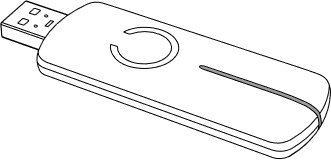
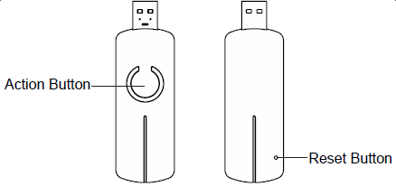
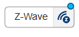

Using Z-Wave
How to install Z-Wave Stuff
The Z-Wave Aeotec Z-Stick Gen 5 USB Key
First, you need to buy an Z-Wave USB Key, the Aeotec Z-Stick Gen 5 that you should plug on the pi in any USB available port.

Get the full manual of the key here: http://goo.gl/WDBDFU
Reset the key
To reset all of your Z-Stick’s settings to their factory defaults:
- Unplug the Z-Stick from the USB connector and
- Press and hold the Reset Button for 20 seconds, the LED will become red, then blink faster and faster.
The Z-Stick will now be reset to its original settings, and the blue LED will solid for 2 seconds as confirmation.

Inclusion and exclusion mode
You’ll have to include all ZWave device in to the key (also called “into the network”).
Put your Z-Stick Gen5 into:
- inclusion mode, (also called “learning mode”) by pressing its action button (it blinks blue).
- exclusion mode, by pressing and holding its action button until it blinks yellow rapidly.
This will be detailed for each device later.
Z-Wave software
Then some nodes are needed in Node-RED to communicate with the USB Key.
If you want to install it :
- Use the menu import / node

- type ttb-zwave in the dialog box.

- Wait for the install
- Then reboot and then refresh the web browser page.
Activate Z-Wave
- Type “zwave” into the palette filter box.
- Drag’n drop the ZWave node to the workspace:

- Then Activate: a new Z-Wave workspace appears (if not already there) that contains one node per Z-Wave device functionality.
- Then Activate again to save this new workspace.
Using Z-Wave devices
Now it is possible to use Z-Wave devices.
Look at the following documentations:
- Z-Wave Contact sensors
- Z-Wave Nodon soft Remote
- Z-Wave Fibaro Multi sensor (PIR, temperature, luminance)
- Z-Wave Aeotec bulb
- Z-Wave Switches
To be added: